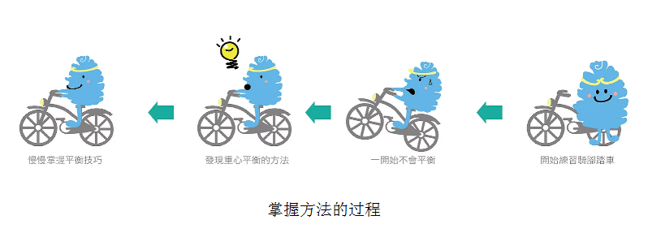

|
“如说修行”网上佛学院 呼吸念佛与静坐智钰
法喜充满，禅悦为食。
问：静坐能够改善大脑结构和功能，提升免疫力、创造力和生活质量，而且在静坐中所产生的阿尔法脑波，对于疗愈心灵创伤，转化负面性和消除焦虑、烦闷、抑郁，都十分有效，所以受到越来越多地关注，有媒体称：“静坐醒脑，风靡欧美。”由于静坐的实用性受到科学的佐证，再加上名人们的推波助澜，以致《时代杂志》说：打坐成为美国主流社会的风尚，有一千万成年人经常打坐（比十年前多了一倍）。我认为：通过呼吸念佛来静坐，更是性命双修。我的问题是：怎样通过呼吸念佛来静坐？ 〔性命双修〕身心全面修炼。身的修炼，是指健康、长寿、快乐；心的修炼，是指悟道、成道、了生死。 答：首先，假设你已经掌握了呼吸念佛方法。至于怎样掌握呼吸念佛方法，详见《呼吸念佛精要》一文。 其次，请你观看下面关于提升阿尔法波的视频，以便于我们的讨论。
上面这个视频中，是在脑波反馈技术的帮助下来“调谐”，以提升阿尔法波（α波）。在实际的呼吸念佛打坐中，虽然没有这些仪器设备，但你可以利用观察感受而得到的反馈信号来“调谐”：当你感受到愉悦轻安时（有如“我的心中升起红太阳”的感觉），这就是阿尔法波出现的征兆。通过不断地练习和尝试，你会掌握这一方法。然后经常地使用它，就会越来越熟练，以致做到站着呼吸念佛也会有那样的效果。想一想，在大自然中这样来呼吸念佛，是多么的美妙啊！印光大师云：“佛号一举，妄念全消。透体清凉，中怀悦豫，直同甘露灌顶，醍醐沃心。其为乐也，莫能喻焉。”（《念佛三昧摸象记》）
 阿尔法波的出现，除了疗愈身心、提升免疫力和创造力之外，还有一个重要作用，就是让你在禅悦法喜中饶有兴趣地修炼下去，天天如此，因而容易成就“念念相续，积习成性”，这是往生西方极乐世界的可靠保证。 〔积习成性〕通过反复练习，使之成为本能。
注： 脑波反馈技术，是在受训者的头上贴置8个电极（左脑和右脑各4个，由前到后地分布）来接收脑波，然后将它们放大、过滤、分解，再以音乐声（笛子、双簧管、风琴）作为反馈信号让受训者通过耳机收听。反馈乐声的音量随着α波能量的大小而大小，如果1个或多个部位突然生成特别多的α波，笛声就会变成双簧管乐声，当α波在左右脑同步生成的时候，反馈就会以低沉浑厚的风琴声表现出来。这样，使受训者知道自己的α波情形，以便经由自己不断的尝试以及培训师通过对讲机的指导，找到提升α波的方法。这种反馈乐声持续2分钟后便停止，接着面前的电脑屏幕亮起，显示8个电极处α波能量的反馈数字（这些数字是该处α波能量的平方根）。这些数字在屏幕上显示8秒钟后消失，屏幕再次变黑，而反馈乐声再次响起。如此交叉进行。本文播放这个视频，意在启发如何通过观察感受而得到的反馈信号来“调谐”以提升α波。
问：我在坐中见到一些景象，有好有坏，应当怎样来对待呢？ 答：《金刚经》云：“凡所有相，皆是虚妄。”因此，无论景象是好是坏、是美是丑，一概置之不理――“不取于相，如如不动。”（《金刚经》）这些景象都是生理和心理所产生的幻觉，切勿当真而有爱憎取舍，更不可有意去追求感应！如此，则无著魔之弊。若是有的景象缠扰不已，便立刻睁目四顾：光天化日，哪有这些怪事！见怪不怪，其怪自败。当即下座，活动活动筋骨，舒展一番，或者经行一阵，再回来打坐。
参考阅读：
|